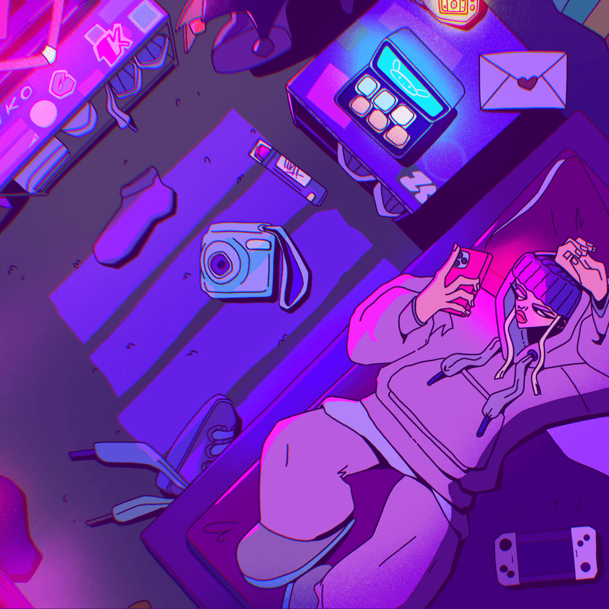
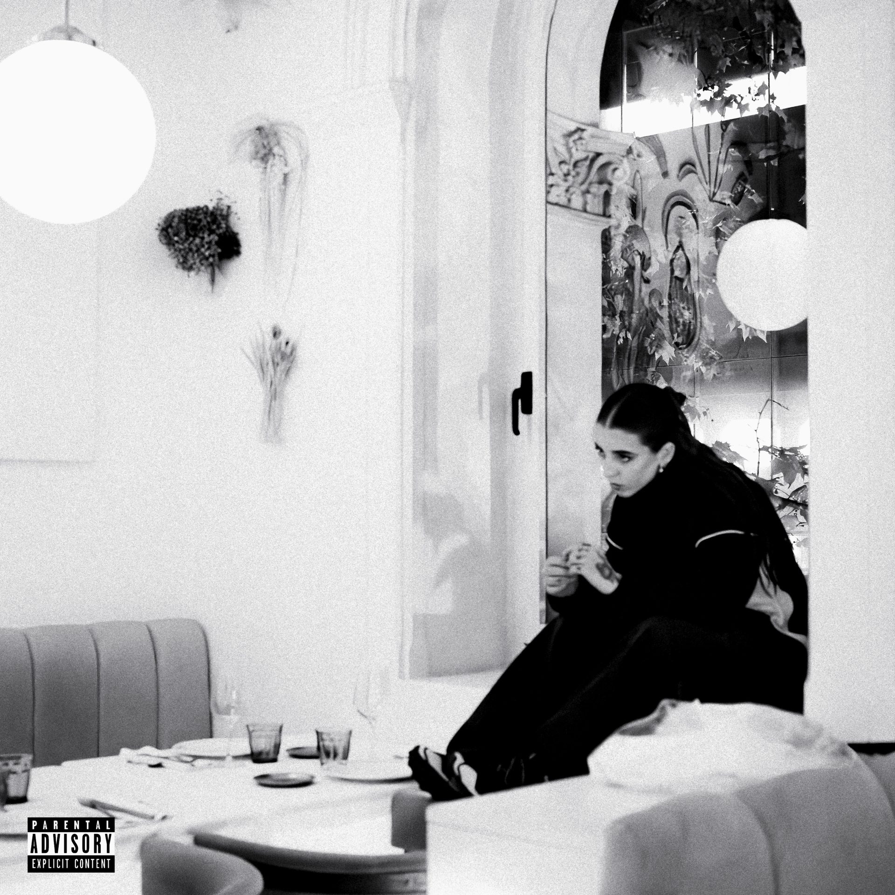

Artist profile
Young Miko
Young Miko (real name Mary Pamela Vega Pérez) is a Puerto Rican rapper and singer from Vega Alta. She is known for blending Latin trap, reggaeton, and R&B, and for hits like “Classy 101” with Feid and “Riele” with Tainy.
Listen and explore
Albums
-

att. offline ft. Feid -

Do Not Disturb/Do Not Disturb: Late Checkout WASSUP